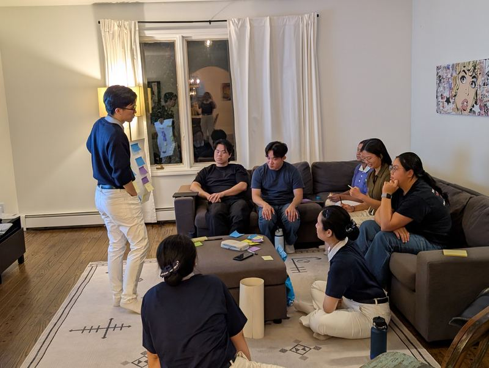
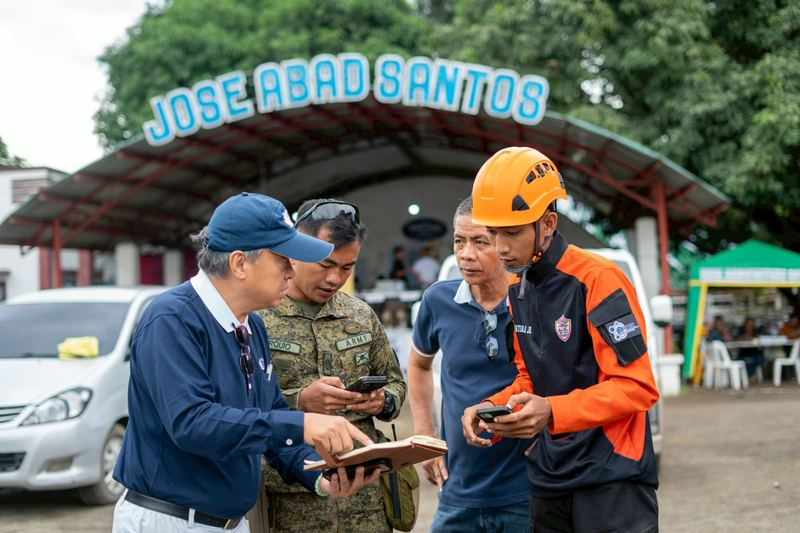
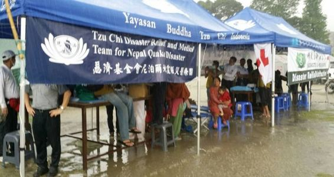
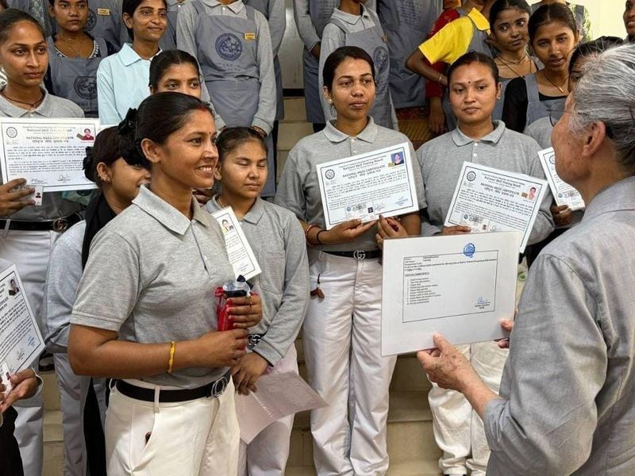
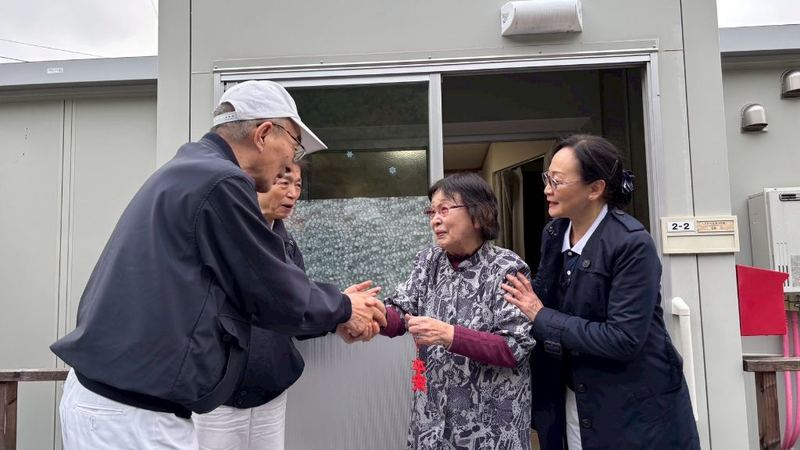
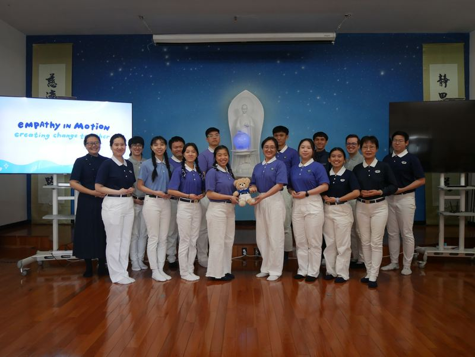
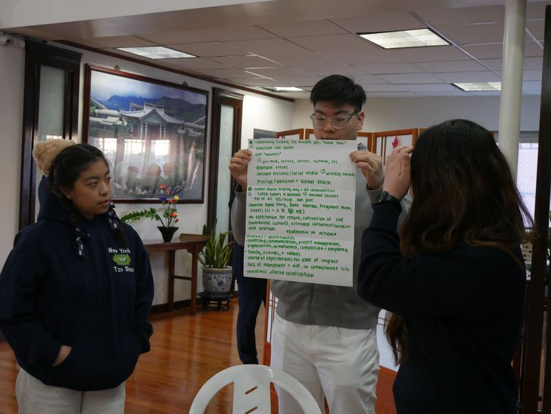
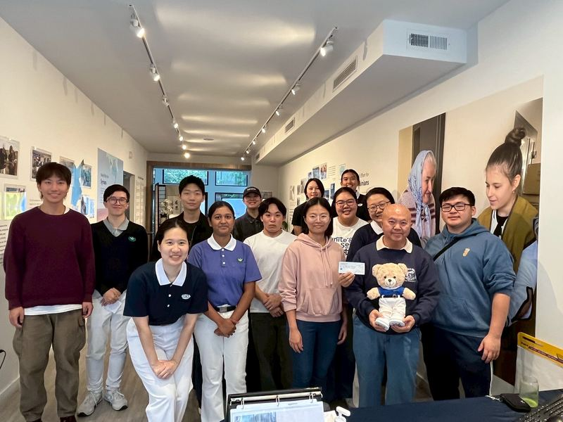
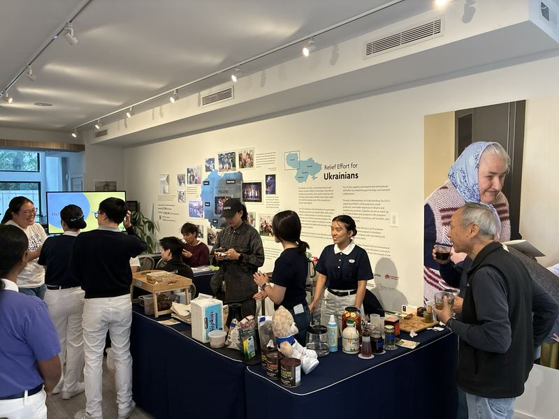
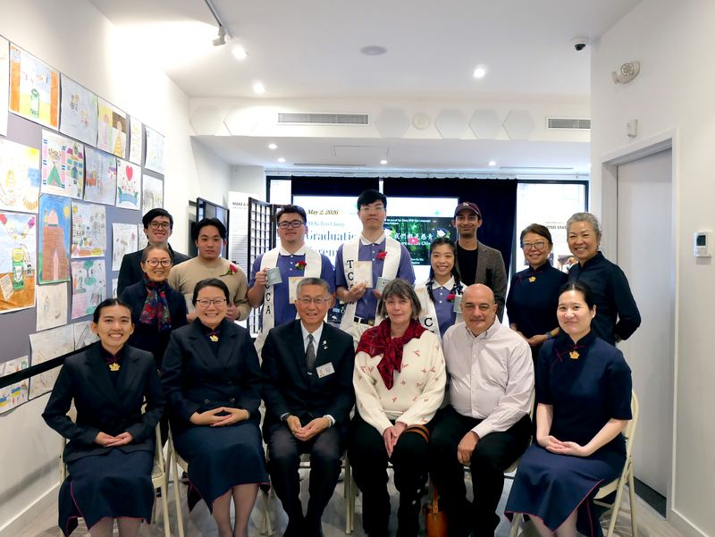

“Speak kind words, think good thoughts, do good deeds, and walk the right path.”
What is TCCA
A worldwide family of student volunteers.
The Tzu Chi Collegiate Association is the youth branch of Tzu Chi USA, a global humanitarian organization founded in 1966 on Buddhist principles of compassion, relief, and mindfulness. Members are affectionately called Tzu Ching, “Tzu Chi Youth.”
While our roots are inspired by Buddhist philosophy, TCCA is completely secular in practice and open to students of all backgrounds. Whether you are religious, spiritual, agnostic, or atheist, everyone is welcome. All you need is the desire to make the world a little better.
Why join
More than a club, a way to grow.
College can be about more than exams and parties. Here is what students find when they lend their hands to Great Love.
Grow as a leader, live mindfully, and help reduce suffering in the world.

Make a tangible, global impact
Backed by an international relief organization, your work has real reach: food distributions, tutoring underserved youth, campus recycling drives, and climate awareness.
Recognized leadership development
National training camps and retreats, global humanitarian speakers, and the prestigious Tzu Ching uniform, a milestone that speaks volumes to grad schools and employers.
A wholesome, grounded community
A culture of kindness, mindfulness, and mutual respect, plus a welcoming, substance-free social circle when college life feels chaotic.
An international network
Tzu Chi is active in dozens of countries. Join a chapter and you join a global family: youth summits, overseas service, and lifelong friendships.
Four Missions
The work we carry forward.
Every Tzu Ching commits to four founding missions, the ground on which all of our service stands.

Charity
Direct relief and recovery for families in hardship, given with dignity, never pity.

Medicine
Free clinics and health outreach that bring care to those who cannot reach it.

Education
Tutoring, scholarships, and vocational training: the skills people build a life on.

Humanistic Culture
Presence that outlasts the headlines, and stories told with truth, goodness, and beauty.
In the chapters
What this actually looks like.
Retreats, service days, and the ordinary weeknight planning that holds it all together.




Chapters
Find your community in the Northeast.
The Northeast Region supports campus chapters at NYU and Stony Brook, plus community chapters in Boston and New York City for students whose schools don’t yet have a dedicated TCCA club.
New York University
New York City
Stony Brook University
Long Island, NY
Boston
For students across Greater Boston
New York City
For students across the five boroughs
No chapter at your school? You can still join a community chapter, or we’ll help you start one. Reach out below.
For members
Resources that carry beyond college.
Two forms of recognition your chapter advisors can formally provide, useful long after you graduate.

Get involved
Lend your hands to Great Love.
Whether you want to join a chapter, start one at your school, or simply ask a question, the Northeast Regional Advisors would love to hear from you.